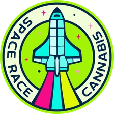
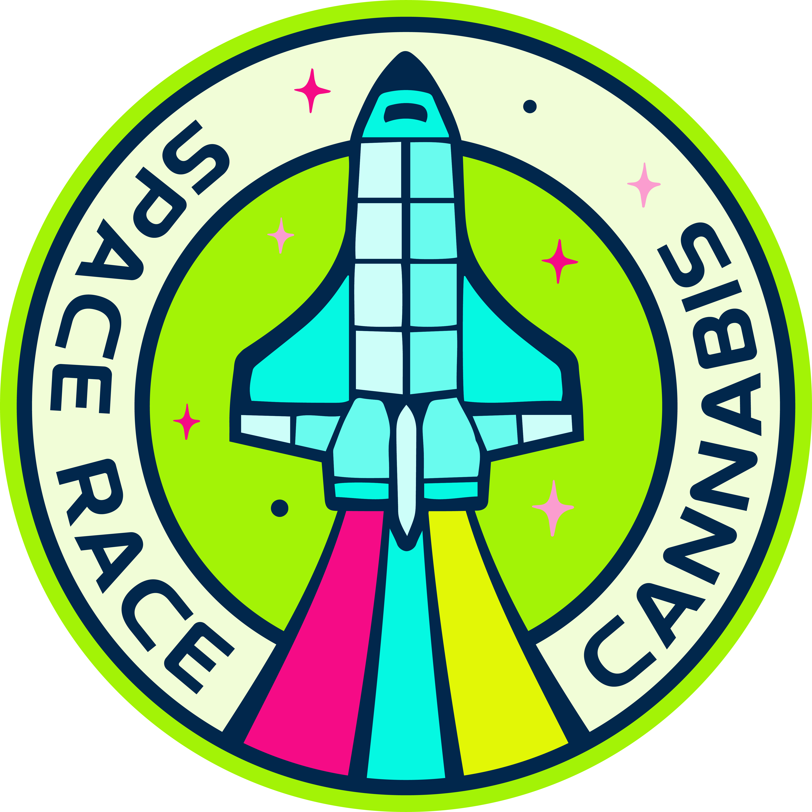

Selection
Cultivars are chosen for how consistently they perform across a full run, not for a single standout harvest.

Mission clearance required
Select your province or territory to continue.
You must be of legal age where you live to enter this site.
Site access · Canada · Please consume responsibly

Space RaceSpace Race programme
A licensed Canadian production programme, run on procedure rather than improvisation.
Programme overview
Space Race is produced in Canada under a Health Canada licence. Cannabis is a regulated product, so what we publish here is limited to what we can evidence: how a lot moves through the programme, and where it is listed for sale.
Cultivars are chosen for how consistently they perform across a full run, not for a single standout harvest.
Grown under a federal licence, with environmental conditions and inputs recorded lot by lot.
Every lot is tested by an accredited laboratory before it can be released for sale.
Packaged, excise-stamped and shipped to provincial boards with full traceability records.
Process sequence